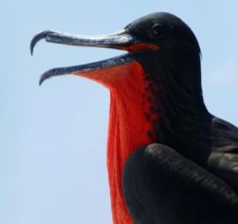

About Us
In G360 Adventures we take pride in being your gateway to the incomparable
wonders of the Galapagos Islands. We are more than just an adventure agency;
we are passionate explorers and nature lovers committed to providing you with a
unique and unforgettable experience in this natural paradise.
At the heart of our mission is a strong belief that the true magic of the
Galapagos Islands is only revealed to those who venture beyond the conventional.
We strive to create carefully crafted itineraries that immerse you in the biological
richness, unique diversity, and indescribable beauty of this archipelago. In G360 Adventures
you would notice:
- Passion for Preservation.
- Team of Local Experts.
- Personalized Experiences.
Isabela - Puerto Villamil

Tintoreras Islote
Snorleking & Hiking
Our comprehensive tour takes you to the enchanting Tintoreras Islet, offers encounters with the iconic Galápagos penguins, and take you to the spectacular flamingo pool and giant tortoise habitat. Each stop on this immersive journey promises a perfect blend of exploration and natural wonders...
140$ per adult
Descripcion
Tunnels
Snorleking
Get ready for an unforgettable aquatic snorkeling experience as you plunge into the crystal-clear waters and connect with the unique marine life of Los Túneles. Explore highlights such as Roca Unión and Bahía El Finado, where you'll encounter astonishing marine biodiversity, including blue-footed boobies, playful sea lions, seahorses, Galápagos sharks and more.
145$ per adult
Descripcion
Sierra Negra and Chico
Hiking
Our tour takes you to the impressive craters of Sierra Negra and Chico volcanoes. Discover the magnitude of nature at Sierra Negra, home to the world's second-largest crater, and explore the spectacular geothermal activity at Volcán Chico. A unique experience for nature and geology enthusiasts, this tour immerses you in the imposing beauty of Isabela's volcanic landscapes.
55$ per adult
Descripcion
San Cristobal - Puerto Baquerizo Moreno
360 Tour
Snorleking & Hiking
Discover the iconic Kicker Rock to the scenic Cerro Brujo and beyond, each stop on this adventure promises a perfect blend of excitement and natural wonder. Immerse yourself in the breathtaking landscapes and diverse wildlife that make this destination truly exceptional.
185$ per adult
Descripcion
Junco Lagoon
Hiking
Explore the natural diversity of San Cristóbal enjoying the serenity of the largest lagoon in the Galápagos at El Junco, observe the fascinating life of turtles at the Breeding Center, and unwind on the idyllic beaches of Puerto Chino. This unique experience combines stunning landscapes, wildlife conservation, and moments of tranquility at some of the most picturesque destinations in San Cristóbal.
65$ per adult
Descripcion
Santa Cruz - Puerto Ayora
Bay Tour
Snorleking & Hiking
Immerse yourself in the coastal beauty of Santa Cruz with our Bay Tour, featuring thrilling snorkeling sessions at Punta Estrada and our most visited spot, Las Grietas. Explore shark routes, and dive into crystal-clear waters while marveling at the marine and terrestrial biodiversity. A perfect escape for those seeking to enjoy the charming coast of Santa Cruz and connect with the unique marine nature of the Galápagos Islands.
40$ per adult
Descripcion
Highland Tour
Hiking
Discover the stunning Highlands of Santa Cruz. Marvel at the Los Gemelos craters, get up close with majestic giant tortoises at Rancho El Chato or Primicias, and immerse yourself in the intricate geological beauty of a natural lava tunnel. This tour provides an enriching experience, blending breathtaking landscapes, encounters with iconic wildlife, and exploration of unique geological formations in the Galápagos Islands.
40$ per adult
Descripcion
Daily Fishing - Some Islands
Seymour Island
Hiking and Snorkeling
Explore the fascinating Seymour Island where every corner reveals the astonishing wildlife of the Galápagos. From majestic birds like the iconic blue-footed boobies and red-chested frigatebirds to land iguanas, each encounter is a unique opportunity to connect with the rich biodiversity of the archipelago. Our expert guides provide captivating narratives about Seymour's natural history as you walk along trails surrounded by unique landscapes.
245$ per adult
Descripcion
Santa Fe Island
Snorleking
Dive into the magic of the ocean with our exciting snorkeling tour in Santa Fe and hidden beach. Experience the thrill of swimming with Galápagos sharks, cross paths with sea turtles, and discover the underwater life teeming with tropical fish. Here, the unique opportunity to swim near friendly sea lions awaits.
140$ per adult
Descripcion
Pinzon Island
Snorkeling
Discover the crystal-clear waters surrounding Pinzón Island as you explore coral reefs and vibrant underwater gardens. Come face to face with fascinating marine life, from colorful tropical fish and majestic sea turtles to groups of black-tip and white-tip sharks. This tour provides a unique opportunity to explore the wonders of the ocean in a pristine and spectacular environment on Pinzón Island, promising an unforgettable snorkeling adventure.
140$ per adult
Descripcion

Daphne Tour
Snorkeling
Dive into the magic of the ocean with our exclusive snorkeling tour on Daphne Island. Explore the crystal-clear waters surrounding the island, where you'll encounter an impressive diversity of marine life. From colorful tropical fish to graceful rays, seahorses and sharks, this snorkeling experience immerses you in a fascinating underwater world. Discover the natural beauty and unique biodiversity of Daphne Island while enjoying an unforgettable aquatic adventure."
135$ per adult
Descripcion